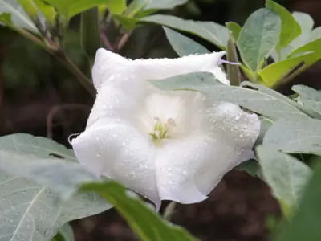

pranet · 出典付きの植物図鑑
チョウセンアサガオ ☠
Datura metel L. · Solanaceae

チョウセンアサガオ は、ナス科の植物。園芸用にはダツラ、ダチュラの名で広く流通しているほか、マンダラゲ（曼陀羅華）、キチガイナスビ（気違い茄子）、トランペットフラワー、ロコ草などの異名もある。原産地はアメリカ合衆国テキサス州からコロンビアにかけてとされるが、熱帯アジア原産という説もある。日本へは、江戸時代（1684年）に薬用植物としてもたらされ、現在は日本全国で帰化・野生化したものが見られる。日本には、江戸時代に薬草として輸入された。渡来したのはシロバナヨウシュチョウセンアサガオよりも前だが、国内の個体数は少ない傾向にある。有毒植物であることから、扱いに注意を要する。
出典: Wikipedia 日本語版「チョウセンアサガオ」 · CC BY-SA 4.0
異名: Brugmansia waymanni Paxton, Datura alba Nees, Datura bojeri Delile, Datura cornucopia J.R.Pitcher & Manda, Datura cornucopia hort., Datura fastuosa L., Datura hummatu Bernh., Datura metel Mill., Datura nilhummatu Dunal, Stramonium fastuosum (L.) Moench, Stramonium metel (L.) Moench
同定や利用は自己責任でお願いします。この図鑑だけを根拠に野生の植物を食べないでください。
出典
- 学名: World Flora Online Plant List 2026-06 · CC0 1.0
- 名前: Wikipedia の記事名と Wikidata · CC0 1.0（Wikidata）。記事名は事実
- 説明: Wikipedia 日本語版「チョウセンアサガオ」 · CC BY-SA 4.0
- 食用・毒性: World Checklist of Useful Plant Species (Diazgranados et al. 2020, RBG Kew) · CC BY 4.0
- 分布: World Checklist of Vascular Plants (WCVP), RBG Kew, version 2026-06-04 · CC BY 3.0
このページは pranet のデータから自動生成しています。コードは MIT、データは項目ごとのライセンス（説明）。